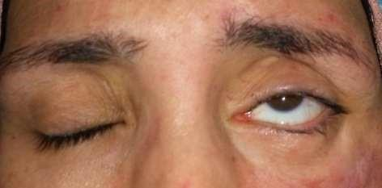

Part I · Lid closure
Lagophthalmos — definition and degrees
- Lagophthalmos means incomplete closure of the palpebral fissure on closure (voluntary or involuntary) of the eyelids.
- Bell’s phenomenon is a protective mechanism in which rolling up of the eye during sleep diminishes the effect of incomplete closure of the palpebral fissure.
Degrees
- Mild: the patient can close the lids voluntarily by forcible squeezing of the lids, but the lids remain open during sleep.
- Severe: the palpebral fissure does not close even with forcible squeezing of the lids.
